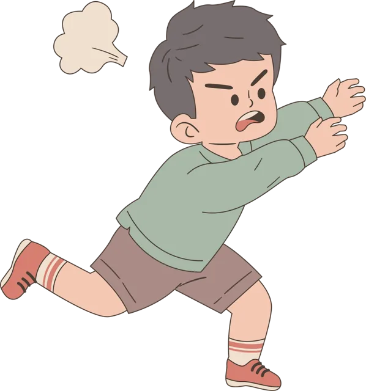

友善校園｜高年級（五、六年級）
友善校園暨反霸凌宣導
同學、朋友之間要彼此尊重。今天一起認識什麼是霸凌、霸凌有哪些種類、怎麼拒絕霸凌，以及可以找誰幫忙。
公埔國小學務處 生教訓育組長 張奕軒老師

同學、朋友之間要彼此尊重。今天一起認識什麼是霸凌、霸凌有哪些種類、怎麼拒絕霸凌，以及可以找誰幫忙。
公埔國小學務處 生教訓育組長 張奕軒老師
我們是『同學』——

『霸凌』是……點一下卡片，看四個重點。

霸凌有六種。點一下卡片，翻過來看說明。
點一下卡片，看拒絕霸凌的四個方法。
點一下句子，全班一起說出來！
把卡片分一分：這是「可以找誰」，還是「怎麼找」？
學校收到檢舉後，會照著步驟處理。先試試看：你能把步驟排出正確順序嗎？
有問題嗎？最後，一起記住這兩句話（點一下打勾）：